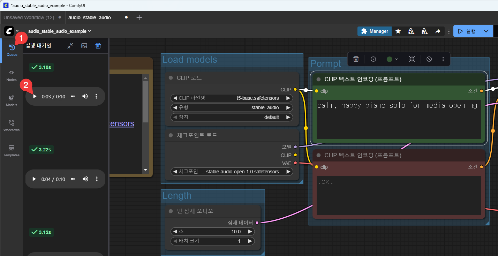

ComfyUI - ACE-Step v1 워크플로
ACE-Step v1 워크플로 기본

가사를 불러주는 보컬이 있는 음악을 만들어 준다.
이 워크플로에서는 크게 4가지를 설정해 줘야 한다.

- 길이: 길이가 길면 길수록 시간이 오래 걸린다.
- prompt: 음악의 내용.
- Verse: 곡의 도입부 가사. 영어로만 작성한다. 한글은 아직 안된다.
- Chorus: 우리말로 하면 하이라이트 부분 가사. 후렴부이다. 역시 영어로만 작성한다.
워크플로 실행
- 길이를 40초로 설정한다.
- prompt: kpop, piano, acoustic guitar, happy, synth
- Verse(도입부 가사): 샘플의 기본값 그대로 사용.
Neon rain on my screen,Dreams compile in silver sheen. No weight, just motion,I’m plugged into emotion.
- Chorus(후렴부 가사): 샘플의 기본값 그대로 사용
Comfy Cloud — breathing light, Code and color, spark and wire. Drift through data, feel alive,In your circuits, I arrive.
- “실행” 버튼을 누른다.
실행 결과
결과 듣기

queue에서 play 버튼을 누르면 재생할 수 있다.
결과 mp3 파일 다운로드

… 버튼을 누른 다음,

다운로드 버튼을 누른다.